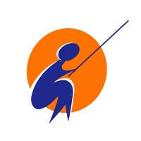

Desarrollador Fullstack | Analista en Sistemas
Desarrollo software enfocado en resolver problemas reales, impulsando la digitalización de negocios con soluciones escalables.
Desarrollo software enfocado en resolver problemas reales, impulsando la digitalización de negocios con soluciones escalables.
Soy Analista de Sistemas de Información y estudiante avanzado de Tecnologías Digitales & Datos. Combino desarrollo de software, análisis de datos y experiencia operativa para diseñar soluciones que respondan a problemas reales de negocio. He trabajado con sistemas clínicos, plataformas POS y sistemas WMS/TMS, participando en implementación, soporte, análisis de procesos y mejora continua. Actualmente desarrollo aplicaciones web y soluciones de automatización
Elijo la herramienta adecuada para cada problema, trabajando cómodamente en diferentes capas del sistema.


Universidad de la Ciudad de Buenos Aires (UNICABA)

EducaciónIT | Fundación Pescar
Instituto Superior Nuestra Señora de La Paz (NSLP)
Mi trayectoria se forjó en la operación real: desde el retail y la salud pública, hasta la logística de alta demanda (Warehousing). Haber interactuado con sistemas POS y WMS desde adentro me permite hoy desarrollar software y analizar datos entendiendo exactamente qué necesita el usuario final y el negocio.
Transformo el flujo operativo en datos accionables operando el sistema WMS/TMS Presis. Gestiono bases de datos de envíos, monitoreo SLAs logísticos a travéz de Power BI y realizo auditorías de aforo para optimizar la trazabilidad y la toma de decisiones en el entorno logístico.
Nexo técnico entre la tecnología y el negocio retail. Soporte al sistema POS Clover, gestión de inventarios y relevamiento de necesidades operativas para proponer mejoras directas en el flujo de comandas.
Implementación y soporte de sistemas clínicos (SIGEHOS) en entornos críticos. Resolución de incidencias en terreno, relevamiento de requerimientos técnicos y capacitación a equipos de salud para asegurar la adopción integral del software.
Plataforma de reserva de canchas deportivas: búsqueda, disponibilidad, reserva y panel de gestión. Backend con arquitectura en capas (Model → DAO → Service → Controller → Router).
Sistema web para centralizar clientes, productos, stock y pedidos de una distribuidora, reemplazando el seguimiento manual y facilitando la trazabilidad de movimientos.
Sitio de catálogo para una mercería de Lugano, CABA — primer proyecto como desarrollador freelance, con foco en captación de clientes vía WhatsApp.
Estoy abierto a nuevas oportunidades, proyectos y desafíos dentro del mundo IT.